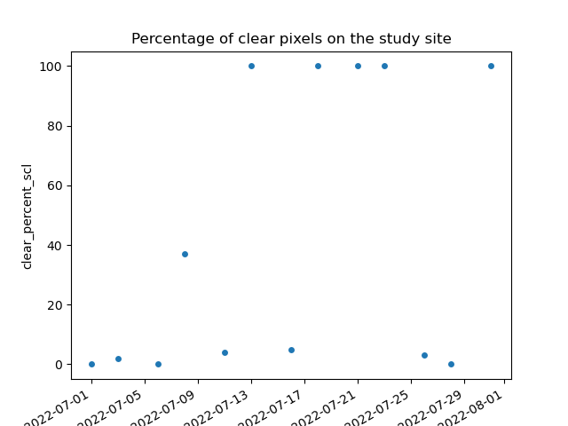
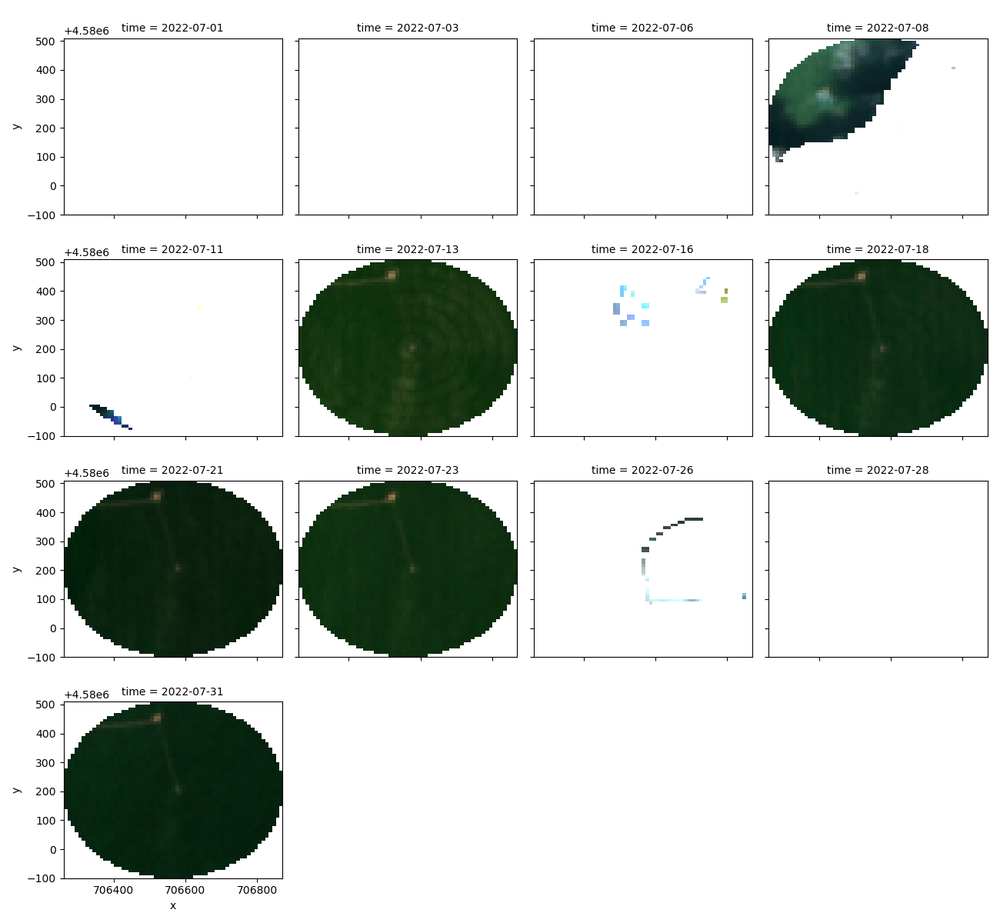

Note
Go to the end to download the full example code
First steps to create a datacube
To create a datacube using Earth Data Store from EarthDaily you have two possibilities.
The first one is the more classic one, you request items, then you build your datacube, and then you can mask pixels using a cloudmask asset. The second one is the most turnkey one, the one we recommend, it allows to do all the process at once.
Import librairies
from earthdaily import earthdatastore
import geopandas as gpd
from matplotlib import pyplot as plt
Loading geometry
geometry = gpd.read_file("pivot.geojson")
Init earthdaily and check available assets
eds = earthdatastore.Auth() # using config from ENV
Create datacube (all in one)
s2_datacube = eds.datacube(
"sentinel-2-l2a",
assets=["blue", "green", "red", "nir"],
intersects=geometry,
datetime=["2022-07"],
mask_with="native", # equal to "scl" for sentinel-2
mask_statistics=True,
)
s2_datacube.clear_percent_scl.plot.scatter(x="time")
plt.title("Percentage of clear pixels on the study site")
plt.show()
print(s2_datacube)
s2_datacube[["red", "green", "blue"]].to_array(dim="band").plot.imshow(
vmin=0, vmax=0.2, col="time", col_wrap=4
)
- 
- 
Clear coverage statistics: 0%| | 0/13 [00:00<?, ?item/s]
Clear coverage statistics: 8%|▊ | 1/13 [00:01<00:18, 1.55s/item]
Clear coverage statistics: 15%|█▌ | 2/13 [00:02<00:14, 1.32s/item]
Clear coverage statistics: 23%|██▎ | 3/13 [00:03<00:12, 1.22s/item]
Clear coverage statistics: 31%|███ | 4/13 [00:04<00:10, 1.21s/item]
Clear coverage statistics: 38%|███▊ | 5/13 [00:06<00:09, 1.20s/item]
Clear coverage statistics: 46%|████▌ | 6/13 [00:07<00:08, 1.15s/item]
Clear coverage statistics: 54%|█████▍ | 7/13 [00:08<00:06, 1.12s/item]
Clear coverage statistics: 62%|██████▏ | 8/13 [00:09<00:05, 1.09s/item]
Clear coverage statistics: 69%|██████▉ | 9/13 [00:10<00:04, 1.05s/item]
Clear coverage statistics: 77%|███████▋ | 10/13 [00:11<00:03, 1.06s/item]
Clear coverage statistics: 85%|████████▍ | 11/13 [00:12<00:02, 1.09s/item]
Clear coverage statistics: 92%|█████████▏| 12/13 [00:13<00:01, 1.09s/item]
Clear coverage statistics: 100%|██████████| 13/13 [00:14<00:00, 1.10s/item]
Clear coverage statistics: 100%|██████████| 13/13 [00:14<00:00, 1.13s/item]
<xarray.Dataset>
Dimensions: (time: 13, y: 61, x: 61)
Coordinates:
* y (y) float64 4.581e+06 4.58e+06 ... 4.58e+06 4.58e+06
* x (x) float64 7.063e+05 7.063e+05 ... 7.069e+05 7.069e+05
spatial_ref int32 32614
* time (time) datetime64[ns] 2022-07-01 ... 2022-07-31
clear_pixels_scl (time) int64 0 88 0 1100 131 ... 2957 2957 106 0 2957
clear_percent_scl (time) int8 0 2 0 37 4 100 5 100 100 100 3 0 100
Data variables:
blue (time, y, x) float64 dask.array<chunksize=(1, 61, 61), meta=np.ndarray>
green (time, y, x) float64 dask.array<chunksize=(1, 61, 61), meta=np.ndarray>
red (time, y, x) float64 dask.array<chunksize=(1, 61, 61), meta=np.ndarray>
nir (time, y, x) float64 dask.array<chunksize=(1, 61, 61), meta=np.ndarray>
Attributes:
usable_pixels: 2957
<xarray.plot.facetgrid.FacetGrid object at 0x7f54d72ad390>
Create datacube in three steps
Request items
items = eds.search(
"sentinel-2-l2a", intersects=geometry, datetime=["2022-07"]
)
Creata datacube (independent from being log into earthdatastore) We request the “scl” assets which is the native cloudmask
s2_datacube = earthdatastore.datacube(
items, assets=["blue", "green", "red", "nir", "scl"], intersects=geometry
)
Mask datacube
# intersects or bbox are asked in order to compute accurate mask statistics
s2_datacube = earthdatastore.mask.Mask(s2_datacube, intersects=geometry).scl(
mask_statistics=True
)
#
s2_datacube[["red", "green", "blue"]].to_array(dim="band").plot.imshow(
vmin=0, vmax=0.2, col="time", col_wrap=4
)
Clear coverage statistics: 0%| | 0/13 [00:00<?, ?item/s]
Clear coverage statistics: 8%|▊ | 1/13 [00:00<00:10, 1.16item/s]
Clear coverage statistics: 15%|█▌ | 2/13 [00:01<00:08, 1.28item/s]
Clear coverage statistics: 23%|██▎ | 3/13 [00:02<00:07, 1.39item/s]
Clear coverage statistics: 31%|███ | 4/13 [00:02<00:06, 1.43item/s]
Clear coverage statistics: 38%|███▊ | 5/13 [00:03<00:05, 1.42item/s]
Clear coverage statistics: 46%|████▌ | 6/13 [00:04<00:04, 1.49item/s]
Clear coverage statistics: 54%|█████▍ | 7/13 [00:05<00:04, 1.33item/s]
Clear coverage statistics: 62%|██████▏ | 8/13 [00:05<00:03, 1.39item/s]
Clear coverage statistics: 69%|██████▉ | 9/13 [00:06<00:02, 1.43item/s]
Clear coverage statistics: 77%|███████▋ | 10/13 [00:07<00:02, 1.47item/s]
Clear coverage statistics: 85%|████████▍ | 11/13 [00:07<00:01, 1.51item/s]
Clear coverage statistics: 92%|█████████▏| 12/13 [00:08<00:00, 1.53item/s]
Clear coverage statistics: 100%|██████████| 13/13 [00:09<00:00, 1.46item/s]
Clear coverage statistics: 100%|██████████| 13/13 [00:09<00:00, 1.43item/s]
<xarray.plot.facetgrid.FacetGrid object at 0x7f54f53f7e90>
Total running time of the script: (3 minutes 27.484 seconds)